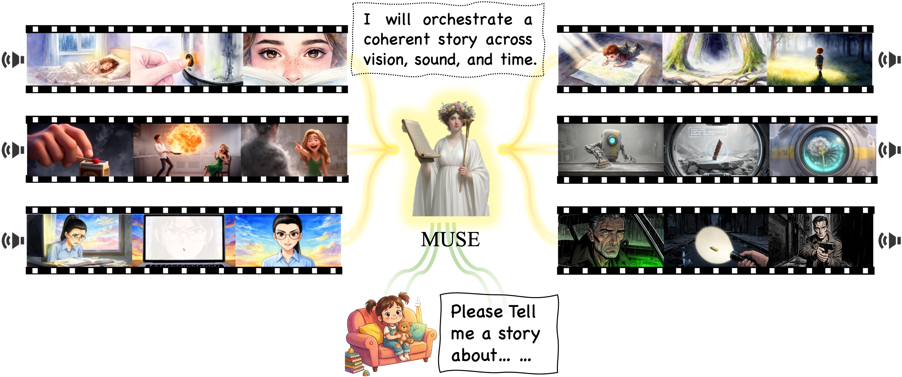
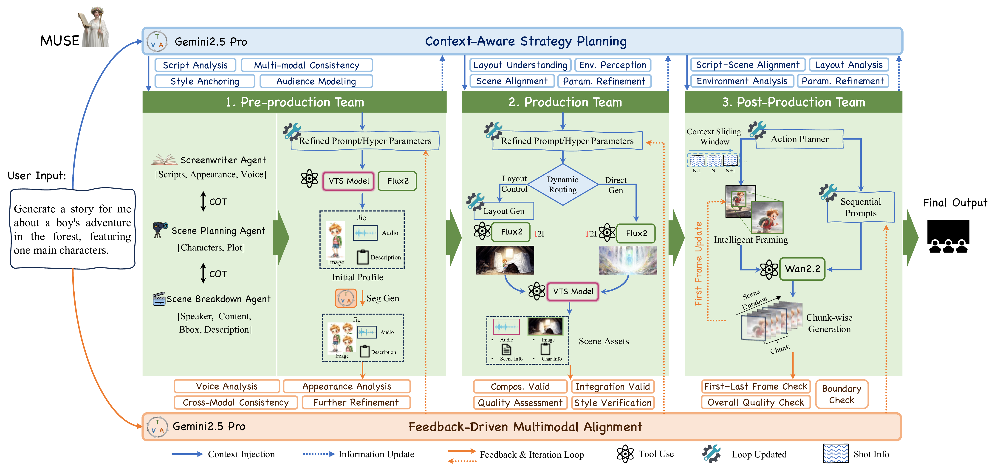
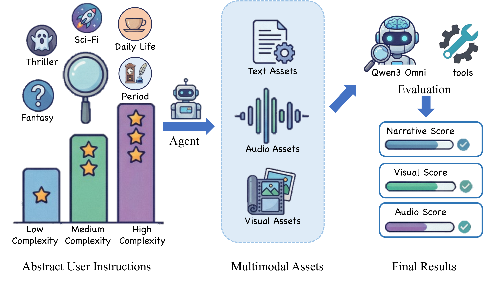

MUSE
A Multi-agent Framework for Unconstrained Story Envisioning via Closed-Loop Cognitive Orchestration
1Li Auto
2University of Science and Technology of China
*Equal contribution
Abstract
Generating long-form audio-visual stories from a short user prompt remains challenging due to an intent–execution gap, where high-level narrative intent must be preserved across coherent, shot-level multimodal generation over long horizons. Existing approaches typically rely on feed-forward pipelines or prompt-only refinement, which often leads to semantic drift and identity inconsistency as sequences grow longer.
We address this challenge by formulating storytelling as a closed-loop constraint enforcement problem and propose MUSE, a multi-agent framework that coordinates generation through an iterative plan–execute–verify–revise loop. MUSE translates narrative intent into explicit, machine-executable controls over identity, spatial composition, and temporal continuity, and applies targeted multimodal feedback to correct violations during generation.
To evaluate open-ended storytelling without ground-truth references, we introduce MUSEBench, a reference-free evaluation protocol validated by human judgments. Experiments demonstrate that MUSE substantially improves long-horizon narrative coherence, cross-modal identity consistency, and cinematic quality compared with representative baselines.
Generation Capabilities

Simple Input for Generative Stories

Style and Consistency Control

Generation Comparisons.
Method

Detailed pipeline of the MUSE approach.
📹 Qualitative Comparisons
Scene 1: Generate a sci-fi scene about a lonely robot exploring a ruined city to find a flower.
MUSE (Ours)
Anim-Director
MM-StoryAgent
MovieAgent
VGOT
Scene 2:A witch talking to her black cat while stirring a cauldron.
MUSE (Ours)
Anim-Director
MM-StoryAgent
MovieAgent
VGOT
MUSEBench

MUSEBench Overview

Visualizations of MUSEBench
More Visualizations

Additional Results.
Citation
@article{sun2024muse,
title={MUSE: A Multi-agent Framework for Unconstrained Story Envisioning via Closed-Loop Cognitive Orchestration},
author={Sun, Wenzhang and [Other Authors]},
journal={arXiv preprint arXiv:xxxx.xxxxx},
year={2026}
}
© 2024 MUSE Project. All rights reserved.